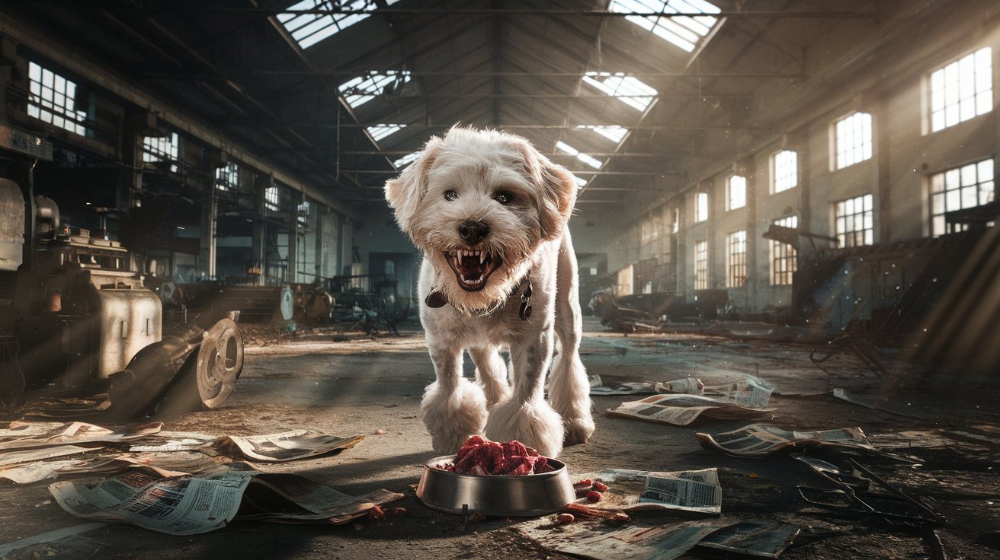
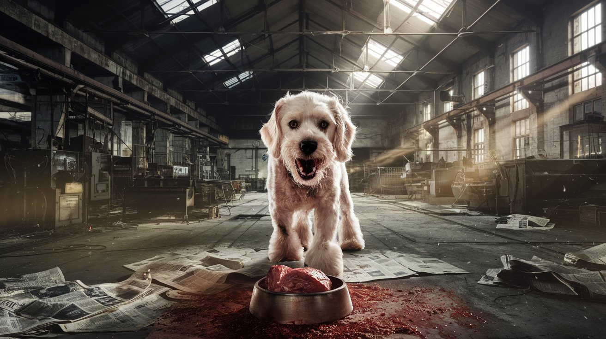
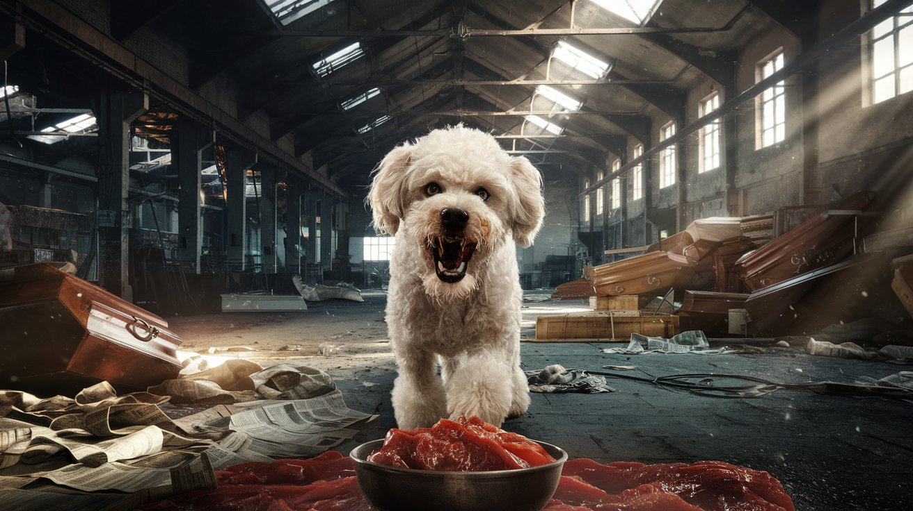
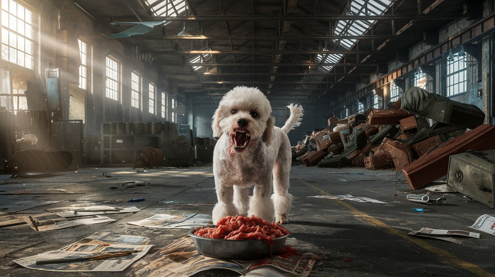
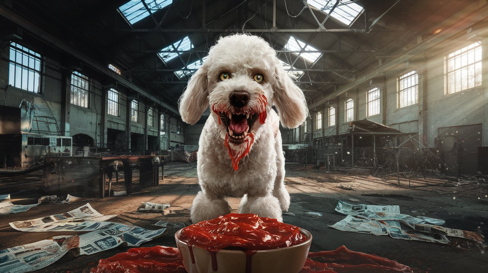
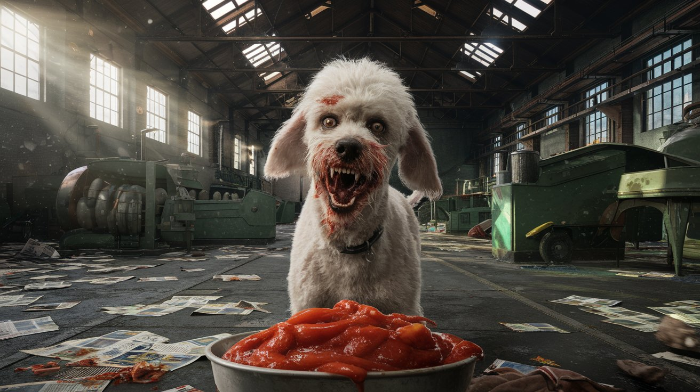
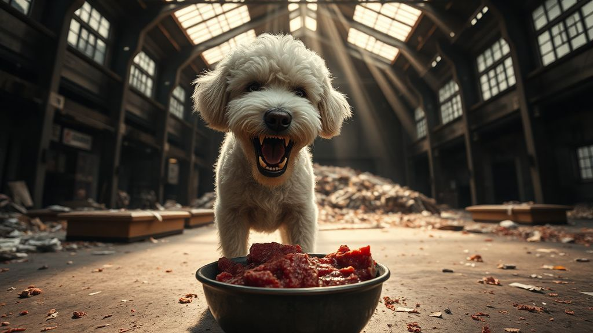
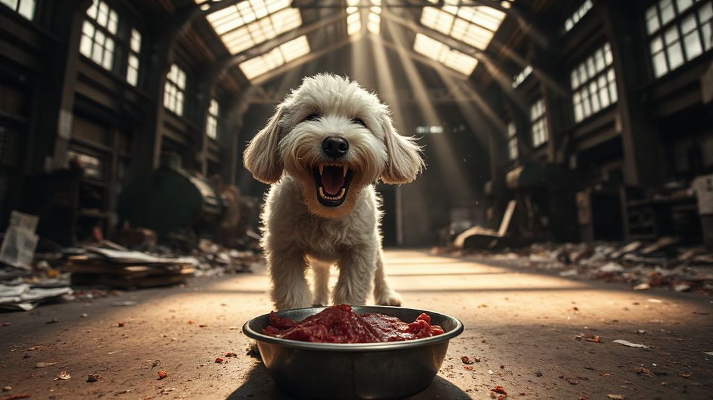
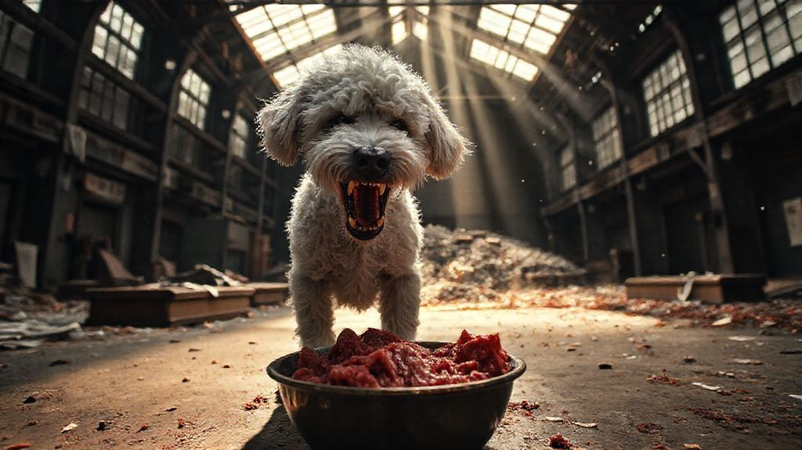
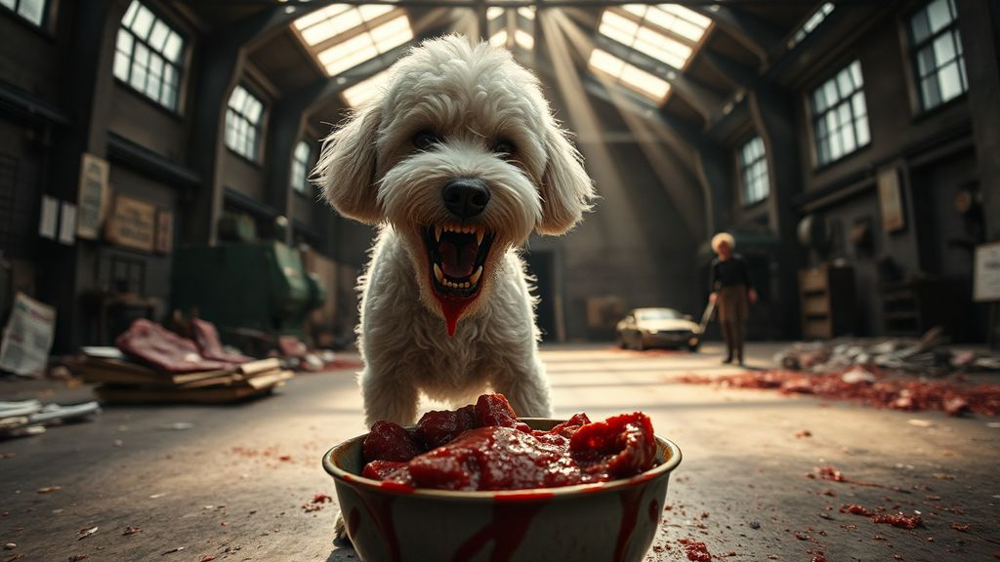

savage-cassie-ideogram-3.jpg

savage-cassie-ideogram-4.jpg

savage-cassie-ideogram-5.jpg

savage-cassie-ideogram-6.jpg

savage-cassie-ideogram-7.jpg

savage-cassie-ideogram-8.jpg

savage-cassie-stable-difffusion-1.jpg

savage-cassie-stable-difffusion-2.jpg

savage-cassie-stable-difffusion-3.jpg

savage-cassie-stable-difffusion-4.jpg